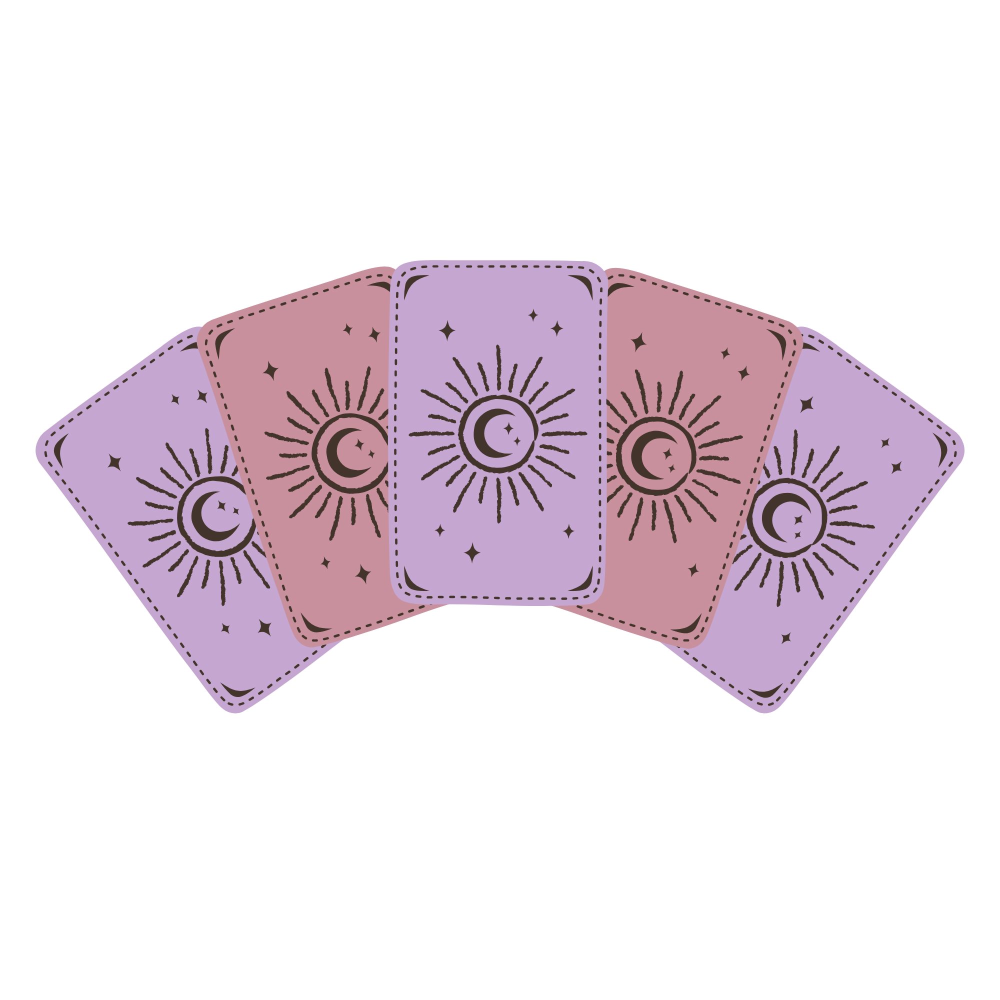
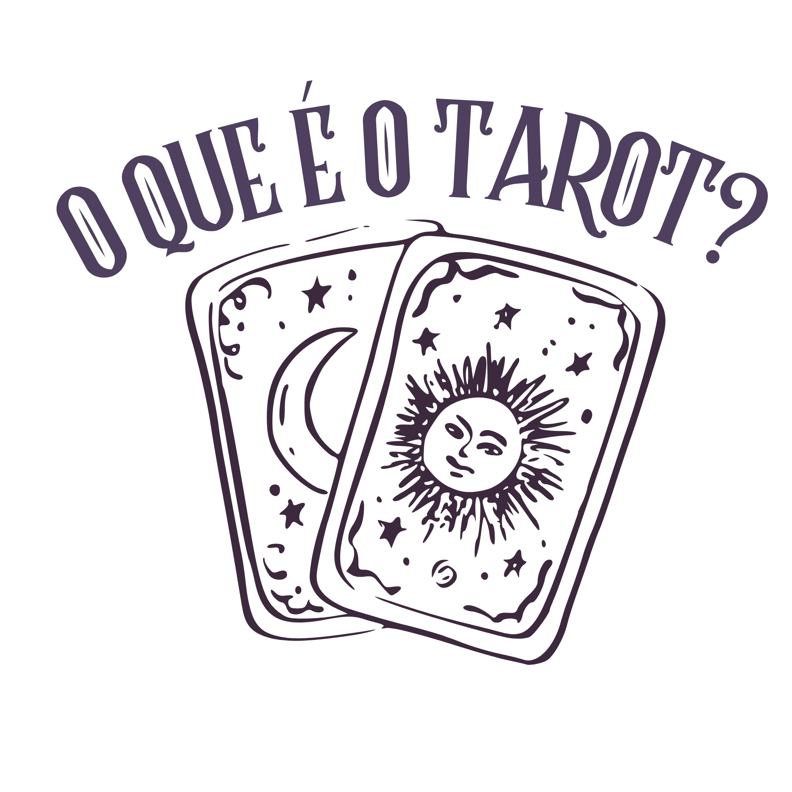

Explore o significado das cartas e conecte-se com sua intuição.

O Tarot é um conjunto de cartas simbólicas usado há séculos para reflexão, autoconhecimento e interpretação de energias. Cada carta carrega significados profundos que podem ajudar a compreender caminhos, desafios e oportunidades. O Mystika é um espaço dedicado ao aprendizado e exploração do Tarot. Aqui você pode conhecer o significado das cartas, entender suas energias e até tirar uma carta do dia para refletir sobre sua jornada.